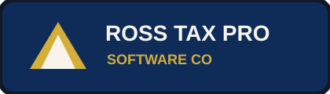

RTPSC Million-Dollar Runtime Command Center
Advanced UI/UX • Live API • Self-Healing Worker • Compliance Gates • RossSign • Forms • Billing
Runtime Command CenterUnified endpoints, live-feed telemetry, signed envelopes, settings hubs, and executive output panels.
/health/live-feed/windows-shell
/health/live-feed/windows-shell
Self-Healing WorkerDry-run syntax scans, registry integrity checks, asset presence checks, and repair plans requiring human approval.
DRY RUNAUDIT REPORT
DRY RUNAUDIT REPORT
Compliance ReleaseEFIN/ETIN gates, OAuth employee access, redaction, human review, and kill switches before external use.
BLOCK UNTIL SATISFIED
BLOCK UNTIL SATISFIED
RossSign + FormsDigital signing pad, form lookup, envelope generation, filing cabinet, exports, and audit manifests.
ESIGNFORMS
ESIGNFORMS
Billing RecoveryInvoices, service fees, tax prep fees, balance recovery, client files, tax years, and ANDREAA assist.
A/RRECON
A/RRECON
Cybersecurity FootprintSecret-manager bindings, default deny roles, signed queue envelopes, and no unreviewed code repair.
SAFEGUARDS
SAFEGUARDS